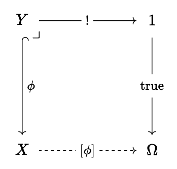
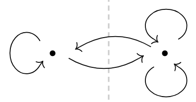
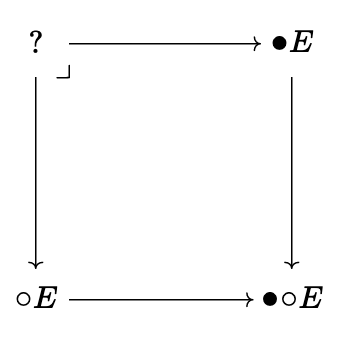
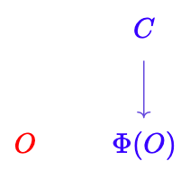
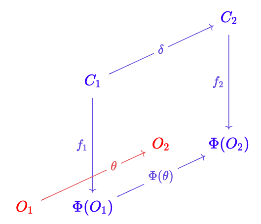
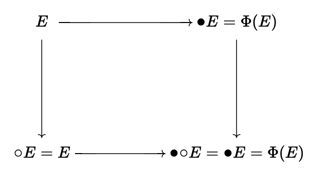
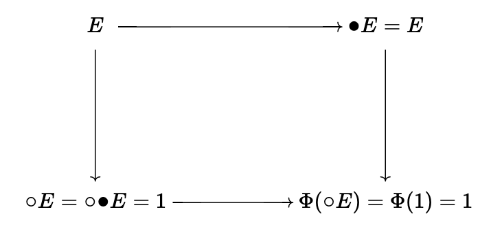
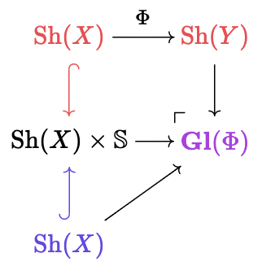

I would like to post an example that I hope will be illuminating to
understanding some concepts in topos theory, and especially Artin
gluing. This is a translation and polishing of my own answer a few days
ago here.
This would include some category basics. I will try to explain some of
them, but obviously I can't turn this into a category theory
introduction. Nonetheless, the answer will certainly be overly wordy to
those who are proficient in category theory, so please do bear with me!
Consider the category Graph, of directed graphs, possibly with self-loops and repeated edges.[1]
The morphisms are graph morphisms, which preserves the incidence
relation between vertices and edges. Let's explore the structures in it
first. Skip this section if you can do this yourself.
The initial object 0
is certainly the empty graph. The terminal object is, instead of the
one-point graph, a graph with one point and a self loop. Coproducts are
easy, by putting two graphs side by side. Products are also standard.
The vertex set of F×G is the cartesian product of the vertex sets of F and G. An edge from (f1,g1) to (f2,g2) corresponds to a pair of edges from f1 to f2 and from g1 to g2, respectively. A good warm up exercise is to verify all these constructions.
The exponential object requires a little bit of thought. I'll give the construction first. The vertices of FG are graph morphisms from G to F, i.e. HomGraph(G,F). The edges are slightly complicated. Let I=∙→∙ be a graph with two vertices {left,right} and one edge. The edges of FG are exactly the set HomGraph(G×I,F). Each edge e connects the vertices (which are graph morphisms) e(−,left) and e(−,right). The reader is invited to play with this definition and verify that it is indeed the exponential, so as to gain some intuition.[2]
What would a subobject be? Recall the definition of a subobject of G: it's a monomorphism X↪G into G, considered up to isomorphism. A subobject in Graph
simply selects some vertices and edges from a graph, but it is required
that once you select an edge, you must select its endpoints as well.
Next up, subobject classifiers. To a non-category-oriented person it might sound scary. But the idea is simple: In the category Set of sets and functions[3], every subobject (a.k.a. subset) X⊆Y is equivalently a function χX:Y→{true,false}, where χX(x)=true if and only if x∈X. So it classifies
elements of the superset according to whether it is included in the
subset. How should we describe it in category speak? We need an object Ω in the place of {true,false}, and we need a morphism 1→Ω to "pinpoint" the true. This would create a pullback diagram:

If you are not familiar with this, I strongly suggest you verify my statements. Note that Ω=1+1 in the category of sets. This is the internal principle of excluded middle.
What happens in the context of graphs? It certainly looks strange:

Here, the true:1→Ω selects one of the self-loop on the right (let's say on the top-right). Why would it be like that? A subobject classifier classifies the "elements" of the superobject according to whether it is included in the subobject, so there you go:
- If a vertex is not in the subgraph, it corresponds to the point on the left.
- If a vertex is in the subgraph, it corresponds to the point on the right.
- If neither of the two endpoints of an edge is in the subgraph, then
this edge is not in the subgraph either. It corresponds to the self-loop
on the left.
- If the source endpoint is in the subgraph but the target endpoint is
not, then the edge corresponds to the edge from right to left.
- If the target endpoint is in the subgraph but the source endpoint is
not, then the edge corresponds to the edge from left to right.
- If both the endpoints are in the subgraph, the edge may also be in
the subgraph. If so, it corresponds to the self-loop on the top-right.
- If the edge is not in the subgraph, it corresponds to the self-loop on the bottom-right.
Note that Ω≠1+1 here.
Next, we finally start to get our hands on topos theory. We define an open to be a subobject ϕ:X↪1. This of course induces χϕ:1→Ω. This name comes from geometric intuitions. You can skip this part if you don't know the mathematics.
Take the category of sheaves on the real Sh(R). Note that individual sheaves such as all the smooth functions C∞(−) constitute the objects of this category. The terminal sheaf assigns every open set the singleton: 1(S)={⋆}. A subobject X of this would then assign every open set either the singleton or the empty set. But you can't just take arbitrary assignments. You have to observe the two laws.
- Restriction morphisms (think, a continuous function is still continuous when restricted to a smaller domain). This means if X(A)={⋆}, for all open subsets B⊆A we would also have X(B)={⋆} as well.
- Patching (if you define a continuous function on multiple domains,
and prove that these definitions are compatible on intersections, then
you can get a big continuous function on the union of these domains).
For any open sets Aα such that X(Aα)={⋆} we have X(⋃αAα)={⋆}.
These two laws ensure that there is a largest open set A such that X(A)={⋆}. Therefore the subobjects of 1 correspond exactly to open sets on R.
Back to our business. What opens are there in Graph? Exactly three: the empty one, the single-point one, and the point-with-self-loop one. The first is 0, the last is 1. And we shall study the middle one, dub it ¶.
Given an open ¶, since it is a subobject ¶→1, we can form a morphism between exponential objects E1→E¶ for any E. If this morphism is in fact an isomorphism, then we call E to be ¶-modal. If you read the part about sheaves, you should see that ¶-modal sheaves are exactly those that are "ignorant" outside the open set ¶: X(A)=X(A∩¶). Therefore, the ¶-modal objects in Sh(R) makes up the sheaf on the open subset ¶. This is why we call it the open subtopos Sh(R)¶.
Since we have defined exponential graphs above, let's plug in the definition and see! E¶ is the graph with all the vertices in E, but there is exactly one edge between every pair of endpoints. So to have E≅E¶, E needs to already be such a graph. This means that Graph¶ is made up of complete graphs.
The acute reader may have notice that no matter what E is, E¶ would have to be isomorphic to (E¶)¶. This (among other reasons) is why we call it a modality. And we should use a notation that suggests a modality: ⚪E.
Now that we have an open subtopos, is there a closed subtopos? Of course. We have the projection E׶→¶. And if this is an isomorphism, we call E to be ¶-connected. (Exercise: work out what this means in Sh(R).) In the category of graphs, E׶ simply removes all the edges. And the projection maps all the vertices onto the one point ¶. So in order for this to be an isomorphism, we need that E only has one point in the first place already. So this makes a subtopos consisting of single-point graphs, Graph∖¶.
Is there a corresponding modality ⚫E
for the closed subtopos? Yes. Appearently we need to "pinch" all the
points of a graph together. What operations in category theory pinches
together stuff? Well, more or less, coequalizers and pushouts. And these
two are more or less equivalent. Since we want to pinch together the
points, we first fetch all the points by taking the product E׶. Then by taking the pushout ⚫E=E+E׶¶, we achieve our goal.
There are actually intricate relationships between the two modalities if we try to compose them. For an arbitrary graph, ⚪⚫E means to (1) pinch together all the points, and (2) connect each pair of points with exactly one edge. This turns every E into the terminal graph 1. So our first neat result: ⚪⚫E≅1.
What about composing the other way? ⚫⚪E first (1) connects each pair of points with exactly one edge, and (2) pinches together all the points. So this would get us n2 edges on one point. This retains a certain amount of information. But the cool thing is, we have a property called fracture so you can actually recover the whole graph E! Consider the pullback

If you forgot what pullbacks are, a quick reminder in the category Set: the pullback of A→fC←gB is {(a,b):f(a)=g(b)}, or equivalently ⋃c∈Cf−1(c)×g−1(c). You can try to calculate the upper-left corner, and it would be exactly E. Here I'm not going through that. Rather, I would like to give some intuition: ⚫E[4] keeps the information about what edges are there, but ignores which vertices are being connected. Conversely, ⚪E remembers which vertices are where but forgets about the edges. So the pullback interpolates, or synthesizes the information, reproducing the whole graph.
Since for each individual graph, we can recover it from the two modalities, we should expect to be able to recover the whole Graph topos from the two subtopos Graph¶ and Graph∖¶. (Sorry for those reading in black and white... But the colors makes the argument much clearer.)
Suppose we are given some random O∈Graph¶ and C∈Graph∖¶, we can try our best to form a "pullback square":

But of course we need more information. From the diagram it is clear that we at least need a functor Φ:Graph¶→Graph∖¶, which is intended to be ⚫, restricted on Graph¶. This provides the crucial information of how the two subtopoi "glues" together. [5]
We can already form a good candidate category! We define the objects of the Artin gluing Gl(Φ) to be triples (O,C,C→fΦ(O)). The morphisms are the natural ones:

We just need to choose (θ,δ) so that the parallelogram commutes.
I will not prove that Gl(Φ)≅Graph here. But let's just do a sanity check. Since it's a "gluing" of topoi, we at least need to find out where did the subtopoi go, right? Since E=⚪E for ¶-modal objects, the pullback diagram for E in the open subtopos becomes:

where the arrow on the right is actually id. So we found the open subtopoi: The full subcategory with objects of the form (E,Φ(E),Φ(E)−→idΦ(E)).
Similarly we draw the diagram for ¶-connected objects:

This suggests that the closed subtopos contains the objects (1,E,E→!1)[6].
So we went through three steps here:
- We defined the open/closed subtopoi of an open.
- We reconstructed the original topos, through Artin gluing.
- We found the two subtopoi in the glued topos.
The interested reader can go on to prove Gl(Φ)≅Graph. Further reading here.
Now for some more geometry! As pointed out in the footnotes, Graph≅Psh(∙⇉∙)
is a simple presheaf category, which is a special case of sheaves (with
a trivial Grothendieck topology). We can take all the sheaves together[7] and form a category. What should our morphisms be? A geometric morphism is a functor F:C→D
that preserves all the finite limits and all colimits. (Does that
remind you of something? In pointset topology, we have that "finite
intersections and all unions" condition on open sets, right?) If that is
the case, then by abuse of notation we say F is a geometric morphism from the topos D to C. Note the reversal! In topology, a continuous function f:X→Y is one that maps the open sets of Y to X.
So there's a similar reversal here. To emphasize our shift of
perspective from categories to topoi, we sometimes write the category C as SetC, and when it's considered as a topos, we write it as C.
The terminal topos 1 is --- considered as a category --- Psh(1), which is just Set.
Another important topos is the Sierpiński topos S, such that SetS=Set→, whose objects are arrows in Set, and morphisms are commutative squares. This name comes from the Sierpiński topology, which is a topology on a two-point space {∙,∘}, where {∘} is open, and {∙} is closed. As an exercise, find out about the topos-theoretic opens in S. (In case you've forgotten, an open is defined to be a subobject of the terminal object.)
Since SetS consists of arrows, we have a functor dom:SetS→Set that takes the domain of the arrows. You can verify that it preserves all colimits and finite limits,[8] and similarly for cod This means we have geometric morphisms 1⇉∘,∙S, which looks exactly the same as our Sierpiński topological space. We can then throw in the topoi that we want to glue:

I shall leave the question of why this is the Artin gluing as I
previously defined as an exercise. (Hint: rewrite everything as
categories instead of topoi, remember the reversal.)
Footnotes
This would make the category Graph≅Psh(∙⇉∙) a special case of a presheaf category.
Where does this weird definition come from? As pointed out in the
previous footnote, we have a presheaf category, and so we can reason
that the exponential object E (if exists) must satisfy E(c)≅Hom(よ(c),E)≅Hom(よ(c)×X,Y), taking よ to be the Yoneda embedding.
I'm assuming the law of excluded middle for the sake of presentation.
Actually, ⚫E together with the morphism ⚫E→⚫⚪E, same for ⚪E.
Not every Φ works, it needs to be left exact, i.e. preserving the terminal object and pullbacks. This actually means that Φ preserves all finite limits. The name "exact" is used in commutative algebra, so no need to be worried about it.
Here left exactness is used.
Modulo conditions that prevent the Russel's paradox here and there. I won't mention them below, but keep in mind that they are very necessary!
A quick way to confirm this is to find an adjoint. In fact, there's a chain cod⊣id(−)⊣dom.

{kind=link}
{kind=link}
{kind=link}
{kind=link}
{kind=link}
{kind=link}
{kind=link}
{kind=link}